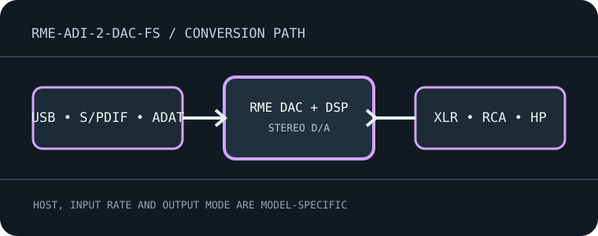

[ INDIVIDUAL MODEL // SOUND HARDWARE ]
RME ADI-2 DAC FS
Two-channel USB/S/PDIF DAC and headphone/IEM amplifier with DSP, balanced and unbalanced line outputs, and remote control.

Model-specific specifications
| Exact model / architecture | Two-channel ESS-based DA converter (ES9028Q2M in the current documented revision), SteadyClock FS and DSP; RME notes earlier unit revisions differ, so identify the serial/revision. |
|---|---|
| Digital inputs / interface | USB 2.0; coaxial RCA S/PDIF; optical TOSLINK S/PDIF/ADAT. Optical mode determines the supported stream and channel configuration. |
| Analog / digital outputs | Balanced XLR and unbalanced RCA stereo line outputs, 6.3 mm Extreme Power headphone output and 3.5 mm IEM output. Also supports USB audio return/recording of the S/PDIF input in its documented full-duplex mode. |
| Supported formats and rates | USB playback supports PCM through 768 kHz and DSD (up to DSD256 per manual/driver mode). Coaxial and optical S/PDIF PCM reach 192 kHz; ADAT optical operation has separate channel/rate limits. Use the manual tables for DSD/DoP and mode-specific limits. |
| Power | External DC power supply; match the unit label and official manual, especially voltage, polarity and current. Do not treat USB as its required power source. |
| Drivers / host compatibility | USB Class Compliant operation is documented; RME driver provides Windows ASIO and advanced features. Select the ADI-2 DAC playback endpoint and matching sample-rate/DSD mode; check the serial-specific manual for revision details. |
| Compatibility caveats | Despite USB full-duplex functionality, this record is for the ADI-2 DAC FS converter model, not RME’s ADI-2 Pro or an unrelated recording interface. Firmware, remote, DAC-chip revision and optical ADAT/S/PDIF mode matter. |
Compatibility & preservation
Despite USB full-duplex functionality, this record is for the ADI-2 DAC FS converter model, not RME’s ADI-2 Pro or an unrelated recording interface. Firmware, remote, DAC-chip revision and optical ADAT/S/PDIF mode matter.
- Record the exact product name, hardware revision, serial range, included power supply, firmware and driver version before service.
- Match digital sample format/rate to the selected physical input and host mode; set downstream amplifier level safely before playback.
- Keep the model-specific manufacturer manual with the device; connector shape alone does not guarantee electrical or protocol compatibility.
Manufacturer sources
- ADI-2 DAC manufacturer product documentationManufacturer product documentation for the exact model and its revision-specific operation/specifications.
- Official ADI-2 DAC manual (PDF)Manufacturer product documentation for the exact model and its revision-specific operation/specifications.